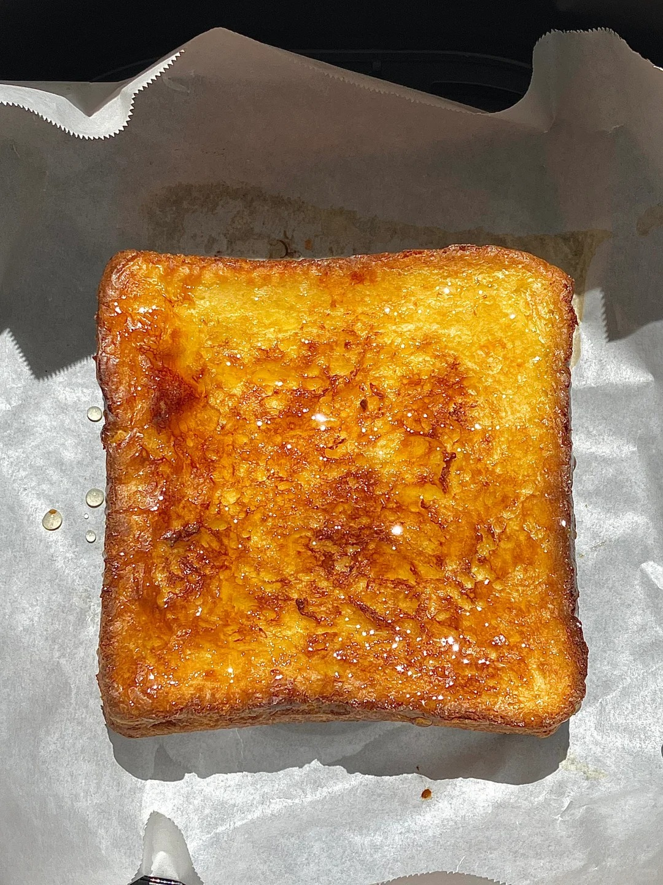
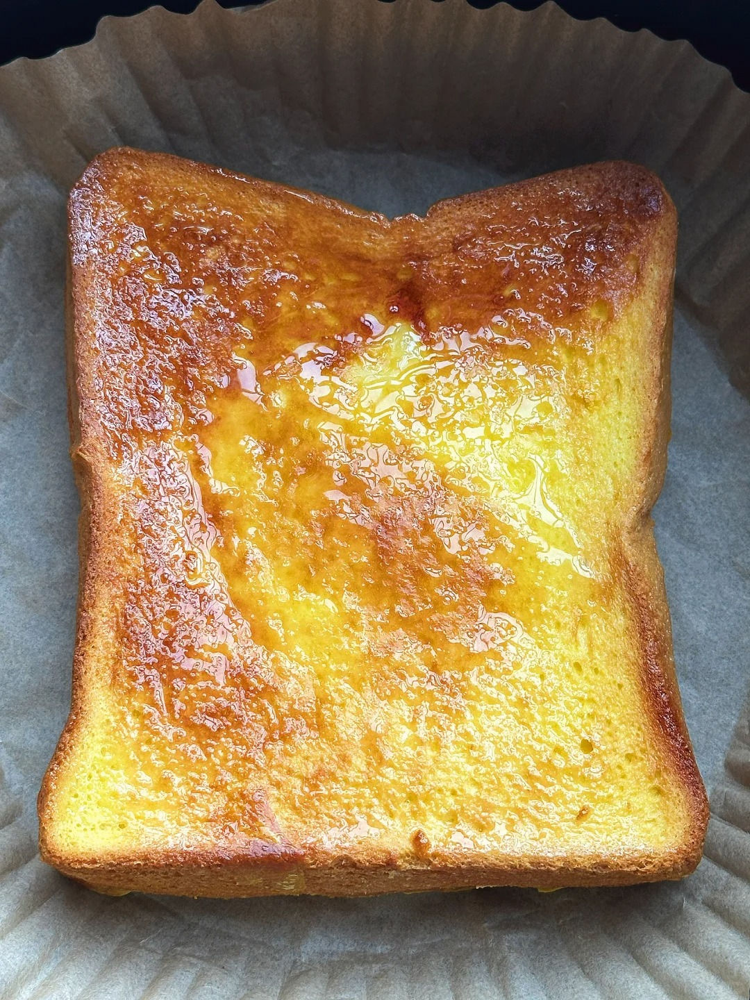

吐司


吐司（Toast），是一种源自西方的经典面包食品，因其方便食用和百搭的特性，已成为全球早餐桌上的常客。“Toast” 一词源于拉丁语 “tostum”，意为 “烤过的”，吐司是切成片的长方形面包，它是将发酵面团放入特定的长方形模具（吐司盒）中烘烤而成的。 虽然古罗马人就开始制作发酵面包，但现代意义上的 “吐司” 概念起源于欧洲。早期的面包为了保存，质地通常很硬。人们发现将干硬的面包片重新烘烤（Toast）后，不仅口感变好，还能延长保质期并杀菌。17 世纪，“Toast” 这个词开始专门指代这种烤过的面包片。20 世纪，美国依阿华州的面包师奥托・罗威德尔（Otto Rohwedder） 发明了第一台自动面包切片机，吐司变得更加普及，成为了工业化食品的代表之一。